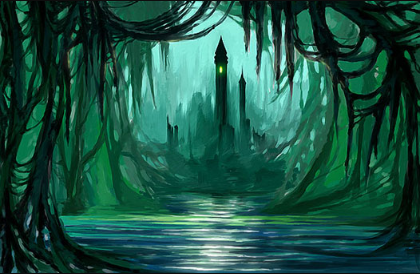

Шпиль Черной башни – подземелье для среднего-высокого уровня персонажей, таящее в себе множество загадок, боссов и уникальных механик прохождения. Прохождение данного подземелья необходимо для получения ключа, который открывает дверь в Затерянную долину.
Шпиль Черной башни
Описание подземелья
- Чтобы попасть в Шпиль, нужно пройти Чёрную башню (29, 18) и сдвинуть все 3 рычага, тогда решётка перед входом в Шпиль откроется. Перед самой решёткой нападают 3 предвестников хаоса 99 уровня. Карту Черной башни с рычагами можно найти тут или тут.
- Для прохождения Шпиля не требуется брать никаких квестов.
- Представляет из себя 40 этажную локацию с 15 различными заданиями-загадками на всех чётных этажах, кроме 2 и 38. Карта Шпиля.
- Размер каждого этажа 13×13 клеток.
- Скорость боя в подземелье х1
- Не работают бонусы на доп. ОД Охотника, не работают штрафы и бонусы Следопыта и Рейдера.
- Есть возможность вмешиваться друг к другу в бои, но невозможно создавать отряд.
- Кристаллы спасения работают в подземелье.
- В случае проигрыша, не оказываетесь на Центральной площади, а переноситесь на начало предыдущего этажа.
- С каждым переходом на этаж выше уровень монстров вырастает на 1. На некоторых этажах при соблюдении заданий эти уровни будут понижены, а при невыполнении – значительно повышены.
- Состав монстров на локации:
- Кровавые патриархи,
- Вечные привратники,
- Полуночные охотники,
- Вампиры-лорды,
- Око бездны,
- Подземные трупоеды,
- Хозяева глубин,
- Пламя бездны,
- Минотавры (лорды, шаманы, стражи).
Загадки Шпиля
Список загадок с условием прохождения (в случае нарушения условий нападают усиленные монстры):
- 4 этаж: Через 50 оборотов стрелки тебя постигнет смерть.
- 50 минут на прохождение
- 6 этаж: Иногда медленные шаги ведут к цели быстрее, чем быстрый бег.
- 3+ минут промежутки между шагами
- 8 этаж: Стоит поторопиться, чтобы враги не успели собраться с силами.
- Короткие промежутки между боями или шагами
- 10 этаж: Каждый шаг может стать последним, если ты не готов к нему на 100%.
- Шагать с 100% здоровьем и магией
- 12 этаж: Кто пожалует сюда с мечом, тот сам падет от меча.
- Снять оружие
- 14 этаж: По левую руку и позади тебя идет погибель твоя.
- Можно ходить только вперед и направо
- 16 этаж: Иногда, когда других путей нет, единственный способ победить – это проиграть.
- Умереть на этаже
- 18 этаж: Смерть идет за тобой по пятам, только развернувшись к ней лицом, ты избежишь ее.
- 4 шага вперед, 1 назад
- 20 этаж: Ступай беззвучно, как будто шагаешь меж спящих львов.
- Снять обувь
- 22 этаж: Если ты покажешь им свою слабость в одном бою, то в следующем они накинутся на тебя со всей своей яростью.
- Стараться заканчивать бой с максимально возможным кол-во здоровья
- 24 этаж: Движение – это твой единственный шанс устоять в сражении.
- Перемещаться на поле боя
- 26 этаж: Бывает так что жизнь союзника важнее твоей собственной.
- Провести минотавра по этажу, не дав ему умереть
- 28 этаж: Чем меньше опасности ты представляешь для них, тем меньше опасности они представляют для тебя.
- Снять все вещи с персонажа – боты будут очень слабые
- 30 этаж: Стоит тебе задержаться в одном бою, и в следующем тебя поторопят помимо твоей воли.
- Не затягивать бои
- 32 этаж: Здесь не место для остановок и отдыха.
- Через произвольные 5-20 минут без боев нападают усиленные боты
- 34 этаж: По правую руку и позади тебя идет погибель твоя.
- Можно ходить только вперед или налево
- 36 этаж: Чтобы дать сдачи, тебе сначала придется сдержать их натиск.
- Боты невосприимчивы ко всем видам урона первые 4+ минуты (теряют иммунитет каждую 4-ю минуту часа 0, 4, 8 и т.д.)
Боссы 39 этажа
На 39 этаже Шпиля необходимо победить 12 боссов (оценить параметры монстров можно по ссылке):
- 1 шаг – Проклятье [255]
- 2 шаг – Ужас глубин [268]
- 3 шаг – Песчаная гончая [234]
- 4 шаг – Минотавр-берсерк [317]
- 5 шаг – Минотавр-лорд [232]
- 6 шаг – Подземный трупоед [282]
- 7 шаг – Око бездны [459]
- 8 шаг – Вампир-лорд [399]
- 9 шаг – Кровавый патриарх [381]
- 10 шаг – Хозяин глубин [272]
- 11 шаг – Пламя бездны [315]
- 12 шаг – Древний император [104]
Награда за прохождение
На 40 этаже Шпиля игрока ждет достойная награда:
- Рунный ключ (открывает дверь в затерянную долину)
- Чертеж доспехов Воина Крови и Магистра
- 30 зелий ярости
- 40 жал скорпиона
- Заклинание Договор со смертью
- Заклинание Доминион разрушения
Советы по прохождению
- Протяженность пути Шпиля составляет 1100 шагов – учтите это при планировании похода. Возможно нужно закупиться Остывшим вулканитом или Ремонтными наборами перед прохождением. Или выкупать вулканит для починки у игроков через дистанционный аукцион.
- Для прохождения шпиля чёрной башни потребуется большое количество зелий забытого времени и эликсиров на магию/здоровье (для магов подойдут так же волшебные снежки с волшебного магазинчика на центральной площади), которыми необходимо пользоваться на 4, 8, 10, 22, 26, 28, 30, 32, 36 и 39 этажах для выполнения условий загадок. Для экономии эликсиров рекомендуется пользоваться ими только на этажах с этими условиями.
- На 12, 20 и 28 этажах для выполнения условий этажа потребуется снимать некоторые (или все) вещи, для дальнейшего использования этих вещей необходимо взять несколько Волшебных кристаллов на +50 характеристик (их можно купить в волшебном магазинчике на центральной площади или найти на 2 этаже особняка вампиров). Если вы проходите персонажем с профессией лекарь и под благами сможете надеть снятые вещи, то потребность в Волшебных кристаллах пропадает.
- Тёмным магам и магам чумы для быстрого прохождения некоторых этажей желательно надеть кловеры и сварить астральные и водные зелья. Либо использоваться еще больше зелий забытого времени.
- На 39 этаже против особо сильных монстров можно использовать Кристаллы спасения, при этом после вашего поражения вы останетесь на той клетке, куда шагнули. Таким образом, можно пройти все боссов только через кристаллы спасения (потребуется больше 20 штук).
- До прохождения 16 этажа не рекомендуется использовать Кристалл спасения – на 16 этаже необходимо умереть, чтобы попасть на следующий этаж, что потратит впустую Кристалл спасения.
- На 36 этаже не обязательно выдерживать натиск бессмертных врагов – достаточно начинать бой с ними в 0, 4, 8 и т.д. минут каждого часа.
- Технически, если ваш персонаж чрезвычайно силен, вы сможете не следовать почти всем правилам этажей и убивать усиленные отряды монстров, но для этого требуется действительно мощный персонаж.
Заключение
Шпиль Черной башни предлагает игрокам увлекательное путешествие по небольшим комнатам с загадками без необходимости прохождения десятка предыдущих этажей в случае поражения в бою. Прохождение Шпиля открывает перед игроком доступ к Затерянной долине – локации, в которой можно собирать Остывший вулканит для бесплатной починки вещей в любой точки мира. Рекомендуется проходить Шпиль с соклановцами, находясь при этом в голосовом чате – так прохождение будет еще более увлекательным.
Автор прохождения: Eradicator